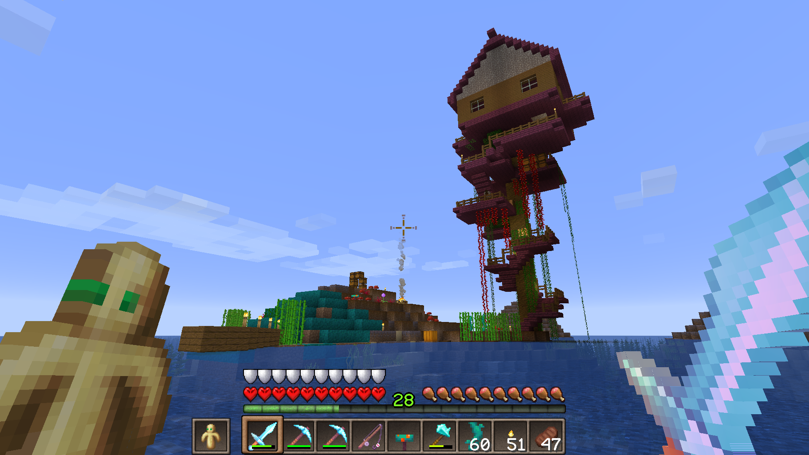

Click "Grymgar on YouTube" on the Navigation panel at the top of the site.
I created a character named Grymgar in the tabletop role playing game by Paizo called "Pathfinder." When I started playing Minecraft obsessively in the mid 2010s, I decided to rename my in game avatar to this, and a new era of play was born for me.
Out of the 2020 pandemic I found hope in unfortunate circumstance by starting a Minecraft YouTube channel. It has always been my dream to have the skills and free time to produce my own content on YouTube and other platforms, and the day has finally arrived. These videos are family friendly and meant to be a fun diversion or an inspiration for your own builds.
The main things I like to do in Minecraft are building details, interior design, terraforming, light redstone and mining/adventuring. I don't really like overly complex storage machines that can break down easily, or that take a long time to build.
Minecraft is like digital Lego bricks, but instead of sinking thousands of dollars into sets, you can get it all for a low cost. Video games and toys should be for all ages anyway! At any rate, I enjoy any game that encourages exploration, cooperation, and creativity.
